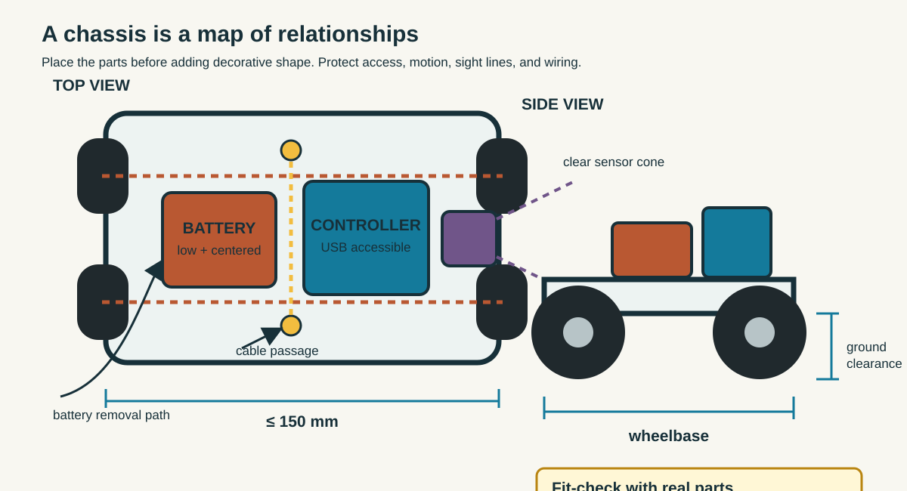
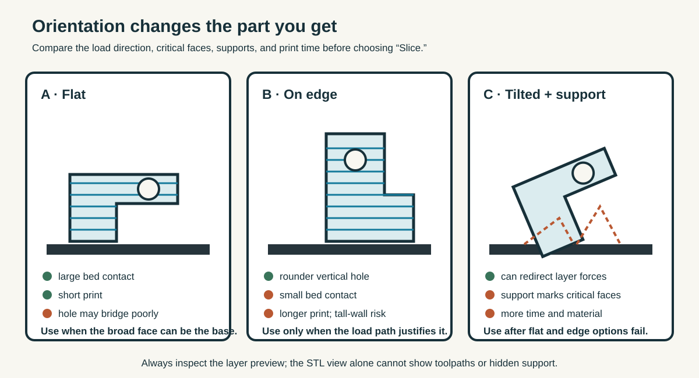
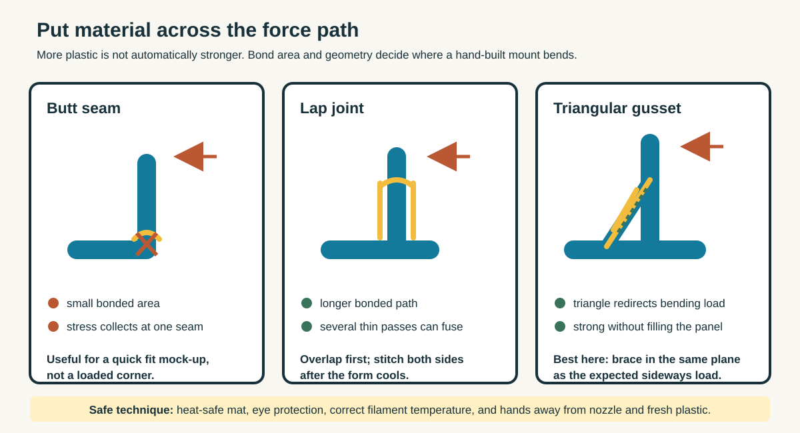
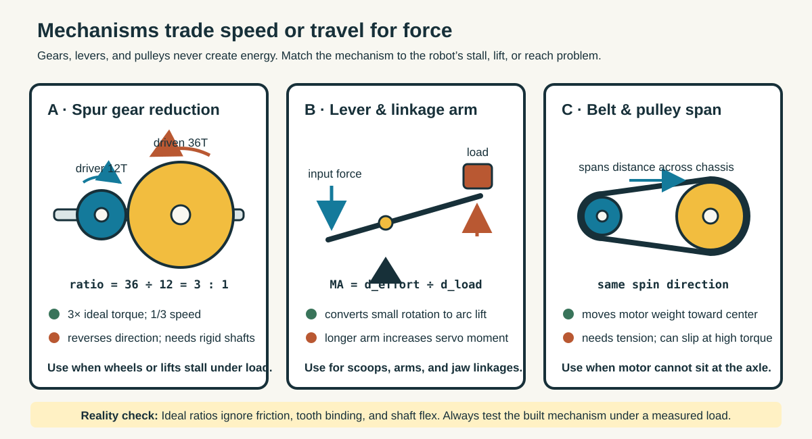
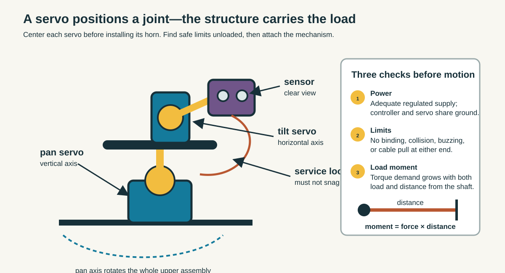
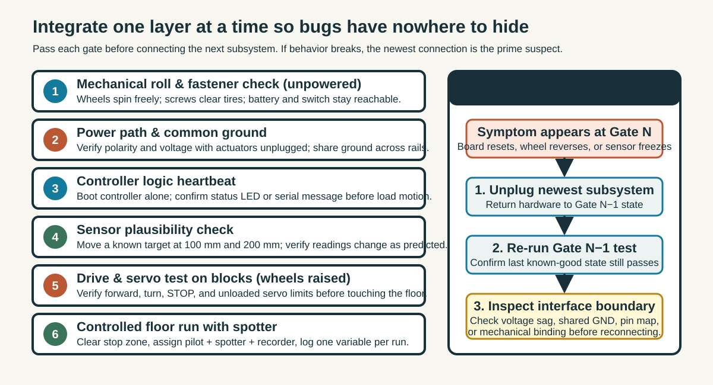
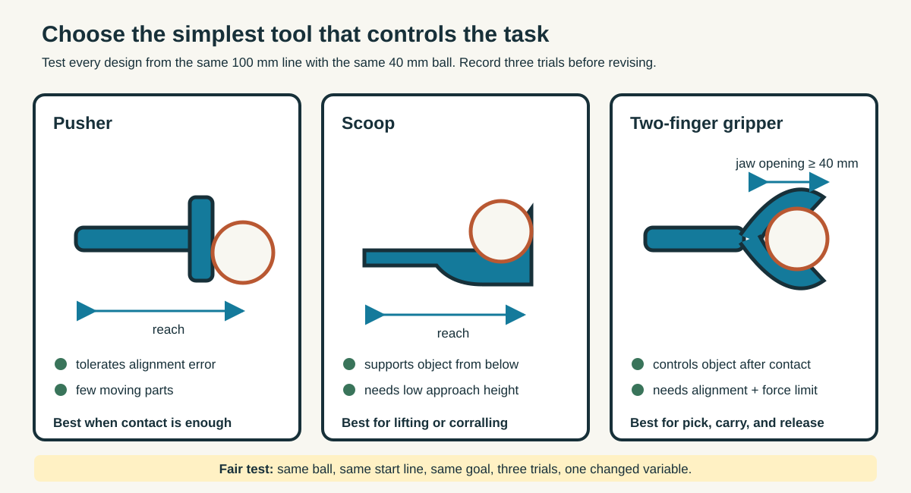
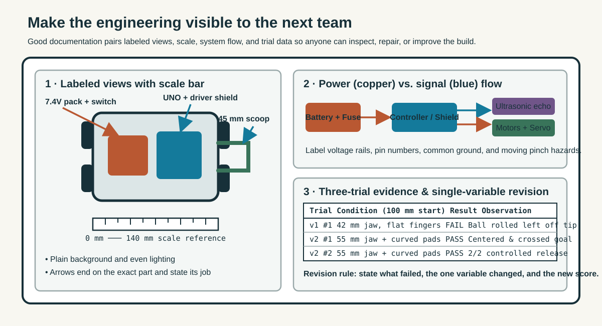

Learn
Start with the wheels, motors, battery, controller, sensor sight lines, fasteners, and cable bends. Measure real parts; online dimensions may omit plugs and wires.
Engineering · Robotics · Fabrication
Carry one robot from measured chassis to tested tool. Every mission ends with evidence that the next team can inspect: a dimension, prediction, test result, photograph, or design decision.
Do the missions in order when building a complete robot, or open one as a standalone workshop. Keep one engineering notebook throughout. Before changing a design, write what you expect the change to improve.
A chassis is not a decorated plate. It locates every component, carries loads into the wheels, protects wiring, and leaves room for hands and tools.

Start with the wheels, motors, battery, controller, sensor sight lines, fasteners, and cable bends. Measure real parts; online dimensions may omit plugs and wires.
Sketch top, side, and front views. Mark the center of mass and predict which component will be hardest to service after assembly.
Model a plate within 150 × 150 mm. Add axle clearance, repeated mounting holes, wire passages, and a replaceable sensor bracket.
Print the drawing at 100%, place the real parts on it, and turn the planned wheels. Revise collisions before exporting.
Dashed yellow box = 150 × 150 mm limit. Crosshair (⊕) = combined center of mass; keep it inside the green wheelbase stability zone.
Another team must be able to identify front, wheel axes, sensor view, battery access, and attachment method without asking the designer.
Build foundational CAD skillsSlicing is an engineering decision: orientation changes strength, time, supports, surface finish, and dimensional accuracy.

Walls make a shell; infill supports it. Layers bond less strongly across Z than material runs within a layer. Holes and clips need printer-specific tolerance tests.
Circle the face that belongs on the bed. Mark overhangs, bridges, load paths, critical holes, and support-removal access.
Import at the intended units. Confirm the bounding box, inspect layer preview, estimate material/time, and save the approved profile.
Name files consistently. Batch small tests before full chassis parts. Record printer, material, profile, owner, and status.
Left: build plate elevation & layer lines up to the scrub bar. Right: cross-section toolpath (blue walls, yellow infill) & hole bridge behavior.
Teacher approves the file and printer profile. Students do not reach into a moving or hot printer. Ventilation and material rules follow the manufacturer and school procedure.
Open the full 3D Printing LabA 3D pen is a hand-controlled extrusion tool. Use it to answer a fit or structure question quickly—not to imitate the final print without a test purpose.

Use the correct filament and temperature. Work on a heat-safe surface with eye protection. Keep fingers away from the nozzle and fresh plastic.
Trace a full-size template, build several thin passes, turn corners gradually, and let each section cool before loading it.
Increase bonded area with lap joints. Add ribs or triangular gussets across bending corners instead of filling every space.
Mount the actual sensor, check its view and cable bend, then shake and push gently in the direction it will be loaded.
Watch how sideways force bends the vertical sensor post and tilts the ultrasonic sight cone away from horizontal.
A thick lump can still fail at one narrow seam. Select a joint and compare its resistance to a sideways push.
Photograph the template, first fit, failure point, and revised mount. Label where force entered and where the first version bent or separated.
Gears, levers, pulleys, and wheel-and-axle systems do not create energy. They exchange distance or speed for force or torque.

Test a lever, pulley, and two gear pairs. Measure input movement, output movement, and the load each arrangement can move.
For a simple gear pair, ratio = driven teeth ÷ driver teeth. Larger ratio gives more ideal output torque and less output speed.
Write the robot’s problem first: stalled wheel, weak lift, excessive speed, or insufficient travel. Then choose a mechanism.
Show driver, driven member, shaft supports, direction of motion, attachment, clearance, and how the robot will be serviced.
Left: driver (blue) and driven (yellow) spur gears turning at live ratio. Right: ramp climb demand vs. net output torque after ~15% mesh friction.
Ideal ratios ignore friction, gear deformation, motor limits, and poor alignment. Test the assembled mechanism under a known load.
Open Mechanisms and Gear SystemsA standard hobby servo moves toward a commanded angle; a DC motor normally spins continuously. Choose based on the motion the mechanism needs.

Confirm signal, supply, and ground. Share ground with the controller. Use an adequate separate low-voltage supply when the servo current exceeds the board’s safe capacity.
Test the servo unloaded. Sweep slowly toward the mechanism limits; stop before binding, buzzing, or collision.
Center the servo before installing the horn. Support loads with structure and bearings rather than asking the output shaft to carry every side load.
Name safe positions, move in small steps, and test one axis at a time before coordinating pan/tilt or two gripper fingers.
Center at 90° before pressing the horn onto the spline. Red sectors show mechanical collision stops (≤ 20° and ≥ 160°).
Demonstrate three named positions repeatedly. Record commanded and observed angles, any jitter, supply arrangement, and one mechanical limit.
Learn servo wiring and output safetyA full robot should not be the first test. Prove power, controller, sensor, drive, and mechanism separately, then add one subsystem at a time.

Deburr parts, test fasteners, check polarity, strain-relieve wires, protect moving parts, and keep the power switch reachable.
With wheels raised safely, verify supply voltage and current path. Power logic before high-load motion when the system allows it.
Add one subsystem, run its known test, and log the result. If behavior changes, the last connection narrows the search.
Demonstrate the requirement, a measured result, a revision, and the next engineering question—not just that the robot moves.
Check off bring-up gates or inject a common bench symptom to practice isolating the fault without tearing the whole robot apart.
Debug rule: If a known test stops passing, disconnect the newest subsystem and restore the last known-good state. Do not replace several parts at once.
For every subsystem, record test condition, prediction, observation, pass/fail criterion, and next action. A failed test with good evidence is useful engineering.
Review the engineering design loopAn end-effector succeeds at a specific interaction. Define the object, start line, allowed contact, mounting interface, and success test before drawing the tool.

From 100 mm away, move a standard 40 mm ping-pong ball across a marked goal line or lift and release it in a target area.
A pusher is simple and tolerant. A scoop supports from below. A gripper controls the object but needs alignment, force, and opening range.
Measure the robot’s mounting holes, safe envelope, actuator travel, and cable route. Use a removable adapter rather than redesigning the chassis.
Run three trials from the same line. Record success rate and failure mode. Change only one variable before the next three trials.
Three trials include small real-world heading jitter (±4 mm) around your lateral alignment offset.
Submit an interface drawing, side-view reach envelope, fabrication file or template, three-trial table, and before/after photograph of the revision.
Explore reach, joints, and end-effectorsDocumentation lets another person understand, test, repair, and improve the robot. Photograph relationships, label interfaces, and connect claims to evidence.

Use even light and a plain background. Capture full robot, top view, side view, underside, controller, sensors, drive, and end-effector. Include a ruler where scale matters.
Use arrows that end on the exact component. Name the part and its job. Show power flow, signal flow, motion, front, and moving hazards.
Write task, requirement, design choice, test evidence, problem, revision, result, and next improvement. Avoid “it worked” without a condition or measurement.
Submit editable CAD/code, exported files, labeled photographs, parts list, test table, summary, and credits for designs or code you adapted.
| Subsystem | Configured Spec | Status / Evidence |
|---|
Ask a classmate who did not build the robot to point to the power source, controller, inputs, outputs, drive system, and tool—and explain one test result using only your board.
Quick check · Engineering review
Test your team’s design judgment before signing off on the build notebook.
1. Why place real components on a 100% paper printout of the chassis before slicing the 3D model?
2. A 12-tooth motor gear drives a 36-tooth axle gear. How does this change ideal speed and torque?
3. Your controller passed Gate 3 alone, but resets as soon as the servo is plugged in. What is the best first debug step?
4. Why run three trials from the exact same 100 mm start line and change only one variable between revisions?
Continue the Robotics Pathway
Once your chassis, mechanisms, servos, and wiring pass staged integration, explore how robots sense, localize, plan, manipulate, and learn across the Robotics suite: